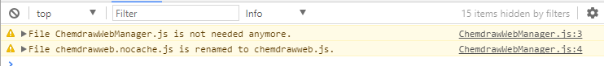

Migrating from ChemDraw Direct
Except the requirement on licenses, the APIs of ChemDraw JS 17.1 are backward-compatible with previous versions of ChemDraw Direct. All the functionalities will work properly after the library is upgraded to ChemDraw JS 17.1 with a valid license. However, there are some changes that need your attention when migrating from ChemDraw Direct 1.x.
Loading Script Change
In ChemDraw Direct 1.x, the following script tag loads the ChemDraw Direct library. This loading script is now deprecated.
<script type="text/javascript" src="chemdrawweb/chemdrawweb.nocache.js">
</script>
<script type="text/javascript" src="chemdrawweb/ChemdrawWebManager.js">
</script>
In ChemDraw JS 17.1, if the library is still loaded in the old way, warning messages will show in the browser console, but the library still works.

It is highly recommended to use the new way as shown below to load the library.
<script type="text/javascript" src="chemdrawweb/chemdrawweb.js"></script>
The URL to the chemdrawweb.js file needs to be changed for your own deployment. Please refer to the ChemDraw JS 17.1 Installation Guide for details.
API Change
The getFragmentsInfo API has been deprecated. It is replaced by two separate APIs getAllFragmentsInfo and getSelectedFragmentsInfo.
Style Change
ChemDraw JS 17.1 re-implemented the whole user interface with modern UI frameworks which are different from the techniques used in ChemDraw Direct 1.x. As a result, almost all of the existing overridden CSS rules will no longer work. Please refer to
Deprecated CSS Classes to find out which CSS classes are still available in the short term.
Deprecated CSS Classes
In order to support few legacy applications, the following CSS classes are added in ChemDraw JS 17.1, but deprecated. They will be removed in future releases.
cdd-panel-group-buttons
cdd-TemplateMenu
cdd-TemplateSubMenu
CDW_Logo
CDW_ClipboardIcon
Theme Support
In ChemDraw Direct 1.7, a set of rules could be defined in a theme node which can be specified in ChemDraw Direct's configuration and then loaded when ChemDraw Direct is initialized.
Since ChemDraw Direct 2.0, the themes are no longer supported. Please follow the new guide above to customize ChemDraw JS.
The configuration for tools layout defined in ChemDraw Direct 1.x works in ChemDraw JS 17.1. No changes are needed.
Configuration Change
The following tools are no longer available in ChemDraw JS 17.1. The related entries in the configuration file can be removed.
Print
Unintegral
MoveCanvas
All the feature entries except Extended Copy Paste are no longer meaningful in ChemDraw JS 17.1. The related entries in the configuration file can be removed.
Please refer to
Configuring ChemDraw JS for details.
Migrating from ChemDraw Direct 2.0
Since ChemDraw JS 17.1, a valid license file is required when initializing a ChemDraw JS instance. Please contact PerkinElmer to get a license file and refer to Creating and Attaching a ChemDraw JS Instance for details about how to create a ChemDraw JS instance with a license file.